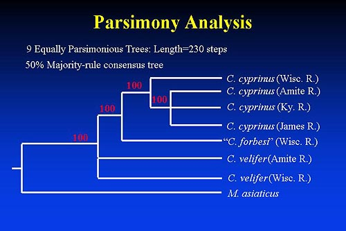

|

Phylogenetic Analysis: Parsimony
- Exhaustive search which included all codon positions, and Myxo as outgroup
- Resulted in 9 equally parsimonious trees=length 230 steps
- Computed a 50% majority rule consensus tree
- All nodes resulted in high bootstrap values
- All cyprinus-like populations formed a monophyletic group,
however the analysis could not resolve relationships
between cyprinus populations from Amite, James, and Ky R.
In addition, C. cyprinus (Wisc. R.) and C. forbesi, did
not cluster as sister taxa in the consensus tree or any
of the 9 equally parsimonious trees.
- Also could not resolve the cyprinus clade from the two
velifer populations
Prev Slide | Next Slide
|

Summary
Introduction
Carpiodes
Ictiobus
Distribution
Field Work
External Morphology
Morphometrics
Allozymes & Isozymes
mtDNA Sequencing
Literature Cited
Publications & Presentations
|